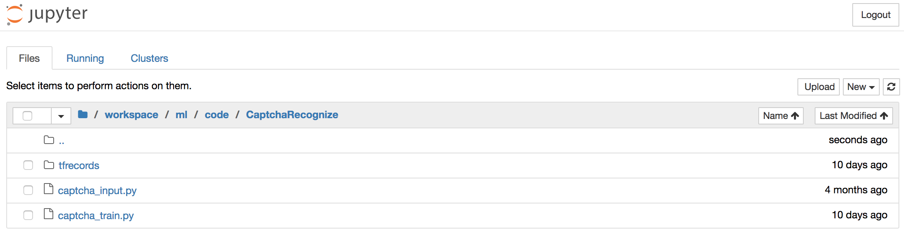
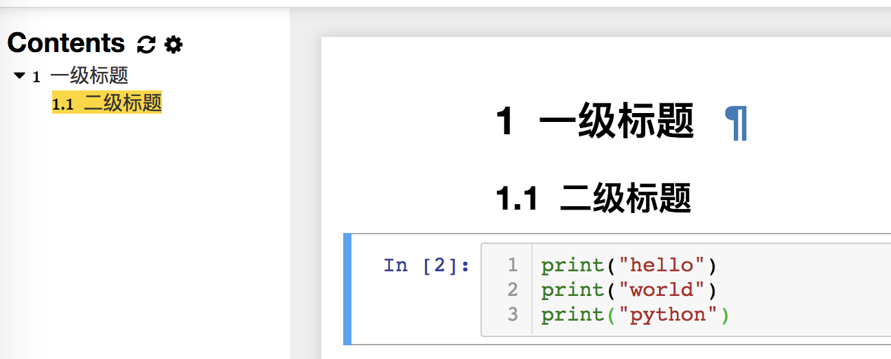
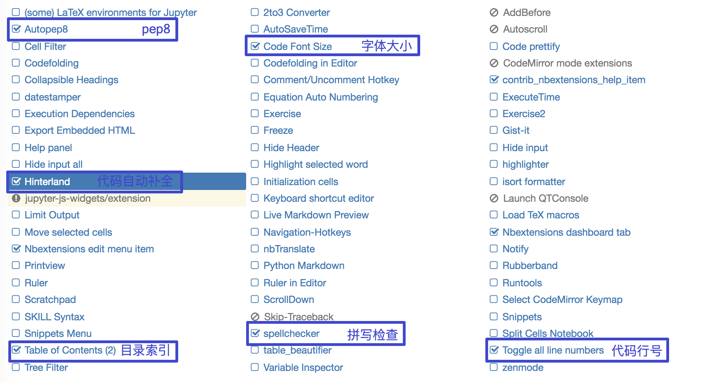

<!DOCTYPE HTML>
<html lang="en" >
    
    <head>
        
        <meta charset="UTF-8">
        <meta http-equiv="X-UA-Compatible" content="IE=edge" />
        <title>jupyter notebook使用 | 机器学习（常用科学计算库的使用）基础定位、目标</title>
        <meta content="text/html; charset=utf-8" http-equiv="Content-Type">
        <meta name="description" content="">
        <meta name="generator" content="GitBook 2.6.7">
        
        
        <meta name="HandheldFriendly" content="true"/>
        <meta name="viewport" content="width=device-width, initial-scale=1, user-scalable=no">
        <meta name="apple-mobile-web-app-capable" content="yes">
        <meta name="apple-mobile-web-app-status-bar-style" content="black">
        <link rel="apple-touch-icon-precomposed" sizes="152x152" href="../gitbook/images/apple-touch-icon-precomposed-152.png">
        <link rel="shortcut icon" href="../gitbook/images/favicon.ico" type="image/x-icon">
        
    <link rel="stylesheet" href="../gitbook/style.css">
    
        
        <link rel="stylesheet" href="../gitbook/plugins/gitbook-plugin-katex/katex.min.css">
        
    
        
        <link rel="stylesheet" href="../gitbook/plugins/gitbook-plugin-expandable-chapters-small/expandable-chapters-small.css">
        
    
        
        <link rel="stylesheet" href="../gitbook/plugins/gitbook-plugin-highlight/website.css">
        
    
        
        <link rel="stylesheet" href="../gitbook/plugins/gitbook-plugin-search/search.css">
        
    
        
        <link rel="stylesheet" href="../gitbook/plugins/gitbook-plugin-fontsettings/website.css">
        
    
    

        
    
    
    <link rel="next" href="../Matplotlib/index.html" />
    
    
    <link rel="prev" href="../env/section1.html" />
    

        
    </head>
    <body>
        
        
    <div class="book"
        data-level="2.2"
        data-chapter-title="jupyter notebook使用"
        data-filepath="env/section2.md"
        data-basepath=".."
        data-revision="Sun Mar 17 2019 13:49:16 GMT+0800 (CST)"
        data-innerlanguage="">
    

<div class="book-summary">
    <nav role="navigation">
        <ul class="summary">
            
            
            
            

            

            
    
        <li class="chapter " data-level="0" data-path="index.html">
            
                
                    <a href="../index.html">
                
                        <i class="fa fa-check"></i>
                        
                        机器学习（常用科学计算库的使用）基础定位、目标
                    </a>
            
            
        </li>
    
        <li class="chapter " data-level="1" data-path="ml_pre/index.html">
            
                
                    <a href="../ml_pre/index.html">
                
                        <i class="fa fa-check"></i>
                        
                            <b>1.</b>
                        
                        机器学习概述
                    </a>
            
            
            <ul class="articles">
                
    
        <li class="chapter " data-level="1.1" data-path="ml_pre/section0.html">
            
                
                    <a href="../ml_pre/section0.html">
                
                        <i class="fa fa-check"></i>
                        
                            <b>1.1.</b>
                        
                        人工智能概述
                    </a>
            
            
        </li>
    
        <li class="chapter " data-level="1.2" data-path="ml_pre/section1.html">
            
                
                    <a href="../ml_pre/section1.html">
                
                        <i class="fa fa-check"></i>
                        
                            <b>1.2.</b>
                        
                        人工智能发展历程
                    </a>
            
            
        </li>
    
        <li class="chapter " data-level="1.3" data-path="ml_pre/section2.html">
            
                
                    <a href="../ml_pre/section2.html">
                
                        <i class="fa fa-check"></i>
                        
                            <b>1.3.</b>
                        
                        人工智能主要分支
                    </a>
            
            
        </li>
    
        <li class="chapter " data-level="1.4" data-path="ml_pre/机器学习工作流程.html">
            
                
                    <a href="../ml_pre/机器学习工作流程.html">
                
                        <i class="fa fa-check"></i>
                        
                            <b>1.4.</b>
                        
                        机器学习工作流程
                    </a>
            
            
        </li>
    
        <li class="chapter " data-level="1.5" data-path="ml_pre/section3.html">
            
                
                    <a href="../ml_pre/section3.html">
                
                        <i class="fa fa-check"></i>
                        
                            <b>1.5.</b>
                        
                        机器学习算法分类
                    </a>
            
            
        </li>
    
        <li class="chapter " data-level="1.6" data-path="ml_pre/section4.html">
            
                
                    <a href="../ml_pre/section4.html">
                
                        <i class="fa fa-check"></i>
                        
                            <b>1.6.</b>
                        
                        模型评估
                    </a>
            
            
        </li>
    
        <li class="chapter " data-level="1.7" data-path="ml_pre/section5.html">
            
                
                    <a href="../ml_pre/section5.html">
                
                        <i class="fa fa-check"></i>
                        
                            <b>1.7.</b>
                        
                        Azure机器学习模型搭建实验
                    </a>
            
            
        </li>
    
        <li class="chapter " data-level="1.8" data-path="ml_pre/section6.html">
            
                
                    <a href="../ml_pre/section6.html">
                
                        <i class="fa fa-check"></i>
                        
                            <b>1.8.</b>
                        
                        深度学习简介【了解】
                    </a>
            
            
        </li>
    

            </ul>
            
        </li>
    
        <li class="chapter " data-level="2" data-path="env/index.html">
            
                
                    <a href="../env/index.html">
                
                        <i class="fa fa-check"></i>
                        
                            <b>2.</b>
                        
                        机器学习基础环境安装与使用
                    </a>
            
            
            <ul class="articles">
                
    
        <li class="chapter " data-level="2.1" data-path="env/section1.html">
            
                
                    <a href="../env/section1.html">
                
                        <i class="fa fa-check"></i>
                        
                            <b>2.1.</b>
                        
                        库的安装
                    </a>
            
            
        </li>
    
        <li class="chapter active" data-level="2.2" data-path="env/section2.html">
            
                
                    <a href="../env/section2.html">
                
                        <i class="fa fa-check"></i>
                        
                            <b>2.2.</b>
                        
                        jupyter notebook使用
                    </a>
            
            
        </li>
    

            </ul>
            
        </li>
    
        <li class="chapter " data-level="3" data-path="Matplotlib/index.html">
            
                
                    <a href="../Matplotlib/index.html">
                
                        <i class="fa fa-check"></i>
                        
                            <b>3.</b>
                        
                        Matplotlib
                    </a>
            
            
            <ul class="articles">
                
    
        <li class="chapter " data-level="3.1" data-path="Matplotlib/section1.html">
            
                
                    <a href="../Matplotlib/section1.html">
                
                        <i class="fa fa-check"></i>
                        
                            <b>3.1.</b>
                        
                        Matplotlib之HelloWorld
                    </a>
            
            
        </li>
    
        <li class="chapter " data-level="3.2" data-path="Matplotlib/section2.html">
            
                
                    <a href="../Matplotlib/section2.html">
                
                        <i class="fa fa-check"></i>
                        
                            <b>3.2.</b>
                        
                        折线图(plot)与基础绘图功能
                    </a>
            
            
        </li>
    
        <li class="chapter " data-level="3.3" data-path="Matplotlib/section3.html">
            
                
                    <a href="../Matplotlib/section3.html">
                
                        <i class="fa fa-check"></i>
                        
                            <b>3.3.</b>
                        
                        常见图形绘制
                    </a>
            
            
        </li>
    

            </ul>
            
        </li>
    
        <li class="chapter " data-level="4" data-path="Numpy/index.html">
            
                
                    <a href="../Numpy/index.html">
                
                        <i class="fa fa-check"></i>
                        
                            <b>4.</b>
                        
                        Numpy
                    </a>
            
            
            <ul class="articles">
                
    
        <li class="chapter " data-level="4.1" data-path="Numpy/section1.html">
            
                
                    <a href="../Numpy/section1.html">
                
                        <i class="fa fa-check"></i>
                        
                            <b>4.1.</b>
                        
                        Numpy的优势
                    </a>
            
            
        </li>
    
        <li class="chapter " data-level="4.2" data-path="Numpy/section2.html">
            
                
                    <a href="../Numpy/section2.html">
                
                        <i class="fa fa-check"></i>
                        
                            <b>4.2.</b>
                        
                        N维数组-ndarray
                    </a>
            
            
        </li>
    
        <li class="chapter " data-level="4.3" data-path="Numpy/section3.html">
            
                
                    <a href="../Numpy/section3.html">
                
                        <i class="fa fa-check"></i>
                        
                            <b>4.3.</b>
                        
                        基本操作
                    </a>
            
            
        </li>
    
        <li class="chapter " data-level="4.4" data-path="Numpy/section4.html">
            
                
                    <a href="../Numpy/section4.html">
                
                        <i class="fa fa-check"></i>
                        
                            <b>4.4.</b>
                        
                        ndarray运算
                    </a>
            
            
        </li>
    
        <li class="chapter " data-level="4.5" data-path="Numpy/section5.html">
            
                
                    <a href="../Numpy/section5.html">
                
                        <i class="fa fa-check"></i>
                        
                            <b>4.5.</b>
                        
                        数学：矩阵
                    </a>
            
            
        </li>
    
        <li class="chapter " data-level="4.6" data-path="Numpy/section6.html">
            
                
                    <a href="../Numpy/section6.html">
                
                        <i class="fa fa-check"></i>
                        
                            <b>4.6.</b>
                        
                        数组间的运算
                    </a>
            
            
        </li>
    

            </ul>
            
        </li>
    
        <li class="chapter " data-level="5" data-path="Pandas/index.html">
            
                
                    <a href="../Pandas/index.html">
                
                        <i class="fa fa-check"></i>
                        
                            <b>5.</b>
                        
                        Pandas
                    </a>
            
            
            <ul class="articles">
                
    
        <li class="chapter " data-level="5.1" data-path="Pandas/section1.html">
            
                
                    <a href="../Pandas/section1.html">
                
                        <i class="fa fa-check"></i>
                        
                            <b>5.1.</b>
                        
                        Pandas介绍
                    </a>
            
            
        </li>
    
        <li class="chapter " data-level="5.2" data-path="Pandas/section2.html">
            
                
                    <a href="../Pandas/section2.html">
                
                        <i class="fa fa-check"></i>
                        
                            <b>5.2.</b>
                        
                        基本数据操作
                    </a>
            
            
        </li>
    
        <li class="chapter " data-level="5.3" data-path="Pandas/section3.html">
            
                
                    <a href="../Pandas/section3.html">
                
                        <i class="fa fa-check"></i>
                        
                            <b>5.3.</b>
                        
                        DataFrame运算
                    </a>
            
            
        </li>
    
        <li class="chapter " data-level="5.4" data-path="Pandas/section4.html">
            
                
                    <a href="../Pandas/section4.html">
                
                        <i class="fa fa-check"></i>
                        
                            <b>5.4.</b>
                        
                        Pandas画图
                    </a>
            
            
        </li>
    
        <li class="chapter " data-level="5.5" data-path="Pandas/section5.html">
            
                
                    <a href="../Pandas/section5.html">
                
                        <i class="fa fa-check"></i>
                        
                            <b>5.5.</b>
                        
                        文件读取与存储
                    </a>
            
            
        </li>
    
        <li class="chapter " data-level="5.6" data-path="Pandas/section6.html">
            
                
                    <a href="../Pandas/section6.html">
                
                        <i class="fa fa-check"></i>
                        
                            <b>5.6.</b>
                        
                        高级处理-缺失值处理
                    </a>
            
            
        </li>
    
        <li class="chapter " data-level="5.7" data-path="Pandas/section7.html">
            
                
                    <a href="../Pandas/section7.html">
                
                        <i class="fa fa-check"></i>
                        
                            <b>5.7.</b>
                        
                        高级处理-数据离散化
                    </a>
            
            
        </li>
    
        <li class="chapter " data-level="5.8" data-path="Pandas/section8.html">
            
                
                    <a href="../Pandas/section8.html">
                
                        <i class="fa fa-check"></i>
                        
                            <b>5.8.</b>
                        
                        高级处理-合并
                    </a>
            
            
        </li>
    
        <li class="chapter " data-level="5.9" data-path="Pandas/section9.html">
            
                
                    <a href="../Pandas/section9.html">
                
                        <i class="fa fa-check"></i>
                        
                            <b>5.9.</b>
                        
                        高级处理-交叉表与透视表
                    </a>
            
            
        </li>
    
        <li class="chapter " data-level="5.10" data-path="Pandas/section10.html">
            
                
                    <a href="../Pandas/section10.html">
                
                        <i class="fa fa-check"></i>
                        
                            <b>5.10.</b>
                        
                        高级处理-分组与聚合
                    </a>
            
            
        </li>
    
        <li class="chapter " data-level="5.11" data-path="Pandas/section11.html">
            
                
                    <a href="../Pandas/section11.html">
                
                        <i class="fa fa-check"></i>
                        
                            <b>5.11.</b>
                        
                        案例
                    </a>
            
            
        </li>
    

            </ul>
            
        </li>
    


            
            <li class="divider"></li>
            <li>
                <a href="https://www.gitbook.com" target="blank" class="gitbook-link">
                    Published with GitBook
                </a>
            </li>
            
        </ul>
    </nav>
</div>

    <div class="book-body">
        <div class="body-inner">
            <div class="book-header" role="navigation">
    <!-- Actions Left -->
    

    <!-- Title -->
    <h1>
        <i class="fa fa-circle-o-notch fa-spin"></i>
        <a href="../" >机器学习（常用科学计算库的使用）基础定位、目标</a>
    </h1>
</div>

            <div class="page-wrapper" tabindex="-1" role="main">
                <div class="page-inner">
                
                
                    <section class="normal" id="section-">
                    
                        <h1 id="22-jupyter-notebook&#x4F7F;&#x7528;">2.2 Jupyter Notebook&#x4F7F;&#x7528;</h1>
<h2 id="&#x5B66;&#x4E60;&#x76EE;&#x6807;">&#x5B66;&#x4E60;&#x76EE;&#x6807;</h2>
<ul>
<li>&#x76EE;&#x6807;<ul>
<li>&#x5B66;&#x4F1A;&#x4F7F;&#x7528;Jupyter Notebook&#x7F16;&#x5199;&#x8FD0;&#x884C;&#x4EE3;&#x7801;</li>
</ul>
</li>
<li>&#x5E94;&#x7528;<ul>
<li>&#x521B;&#x5EFA;&#x6587;&#x4EF6;</li>
<li>&#x64CD;&#x4F5C;cell</li>
<li>&#x8FD0;&#x884C;&#x64CD;&#x4F5C;</li>
</ul>
</li>
</ul>
<h2 id="221-jupyter-notebook&#x4ECB;&#x7ECD;">2.2.1 Jupyter Notebook&#x4ECB;&#x7ECD;</h2>
<p>Jupyter&#x9879;&#x76EE;&#x662F;&#x4E00;&#x4E2A;&#x975E;&#x76C8;&#x5229;&#x7684;&#x5F00;&#x6E90;&#x9879;&#x76EE;&#xFF0C;&#x6E90;&#x4E8E;2014&#x5E74;&#x7684;ipython&#x9879;&#x76EE;&#xFF0C;&#x56E0;&#x4E3A;&#x5B83;&#x9010;&#x6E10;&#x53D1;&#x5C55;&#x4E3A;&#x652F;&#x6301;&#x8DE8;&#x6240;&#x6709;&#x7F16;&#x7A0B;&#x8BED;&#x8A00;&#x7684;&#x4EA4;&#x4E92;&#x5F0F;&#x6570;&#x636E;&#x79D1;&#x5B66;&#x548C;&#x79D1;&#x5B66;&#x8BA1;&#x7B97;</p>
<ul>
<li>Jupyter Notebook&#xFF0C;&#x539F;&#x540D;IPython Notbook&#xFF0C;&#x662F;IPython&#x7684;&#x52A0;&#x5F3A;&#x7F51;&#x9875;&#x7248;&#xFF0C;&#x4E00;&#x4E2A;&#x5F00;&#x6E90;Web&#x5E94;&#x7528;&#x7A0B;&#x5E8F;</li>
<li>&#x540D;&#x5B57;&#x6E90;&#x81EA;Julia&#x3001;Python &#x548C; R&#xFF08;&#x6570;&#x636E;&#x79D1;&#x5B66;&#x7684;&#x4E09;&#x79CD;&#x5F00;&#x6E90;&#x8BED;&#x8A00;&#xFF09;</li>
<li>&#x662F;&#x4E00;&#x6B3E;&#x7A0B;&#x5E8F;&#x5458;&#x548C;&#x79D1;&#x5B66;&#x5DE5;&#x4F5C;&#x8005;&#x7684;<strong>&#x7F16;&#x7A0B;/&#x6587;&#x6863;/&#x7B14;&#x8BB0;/&#x5C55;&#x793A;</strong>&#x8F6F;&#x4EF6;</li>
<li><strong>.ipynb</strong>&#x6587;&#x4EF6;&#x683C;&#x5F0F;&#x662F;&#x7528;&#x4E8E;&#x8BA1;&#x7B97;&#x578B;&#x53D9;&#x8FF0;&#x7684;<strong>JSON&#x6587;&#x6863;&#x683C;&#x5F0F;</strong>&#x7684;&#x6B63;&#x5F0F;&#x89C4;&#x8303;</li>
</ul>
<p></p>
<h2 id="222-&#x4E3A;&#x4EC0;&#x4E48;&#x4F7F;&#x7528;jupyter-notebook">2.2.2 &#x4E3A;&#x4EC0;&#x4E48;&#x4F7F;&#x7528;Jupyter Notebook?</h2>
<ul>
<li>&#x4F20;&#x7EDF;&#x8F6F;&#x4EF6;&#x5F00;&#x53D1;&#xFF1A;&#x5DE5;&#x7A0B;&#xFF0F;&#x76EE;&#x6807;&#x660E;&#x786E;<ul>
<li>&#x9700;&#x6C42;&#x5206;&#x6790;&#xFF0C;&#x8BBE;&#x8BA1;&#x67B6;&#x6784;&#xFF0C;&#x5F00;&#x53D1;&#x6A21;&#x5757;&#xFF0C;&#x6D4B;&#x8BD5;</li>
</ul>
</li>
<li>&#x6570;&#x636E;&#x6316;&#x6398;&#xFF1A;&#x827A;&#x672F;&#xFF0F;&#x76EE;&#x6807;&#x4E0D;&#x660E;&#x786E;<ul>
<li>&#x76EE;&#x7684;&#x662F;&#x5177;&#x4F53;&#x7684;&#x6D1E;&#x5BDF;&#x76EE;&#x6807;&#xFF0C;&#x800C;&#x4E0D;&#x662F;&#x673A;&#x68B0;&#x7684;&#x5B8C;&#x6210;&#x4EFB;&#x52A1;</li>
<li>&#x901A;&#x8FC7;&#x6267;&#x884C;&#x4EE3;&#x7801;&#x6765;&#x7406;&#x89E3;&#x95EE;&#x9898;</li>
<li>&#x8FED;&#x4EE3;&#x5F0F;&#x5730;&#x6539;&#x8FDB;&#x4EE3;&#x7801;&#x6765;&#x6539;&#x8FDB;&#x89E3;&#x51B3;&#x65B9;&#x6CD5;</li>
</ul>
</li>
</ul>
<p>&#x5B9E;&#x65F6;&#x8FD0;&#x884C;&#x7684;&#x4EE3;&#x7801;&#x3001;&#x53D9;&#x4E8B;&#x6027;&#x7684;&#x6587;&#x672C;&#x548C;&#x53EF;&#x89C6;&#x5316;&#x88AB;&#x6574;&#x5408;&#x5728;&#x4E00;&#x8D77;&#xFF0C;&#x65B9;&#x4FBF;&#x4F7F;&#x7528;&#x4EE3;&#x7801;&#x548C;&#x6570;&#x636E;&#x6765;&#x8BB2;&#x8FF0;&#x6545;&#x4E8B;</p>
<p><strong>&#x5BF9;&#x6BD4;Jupyter Notebook&#x548C;Pycharm</strong></p>
<ul>
<li>&#x753B;&#x56FE;</li>
</ul>
<p></p>
<ul>
<li><p>&#x6570;&#x636E;&#x5C55;&#x793A;</p>
<p></p>
<ul>
<li>&#x603B;&#x7ED3;&#xFF1A;Jupyter Notebook &#x76F8;&#x6BD4; Pycharm &#x5728;&#x753B;&#x56FE;&#x548C;&#x6570;&#x636E;&#x5C55;&#x793A;&#x65B9;&#x9762;&#x66F4;&#x6709;&#x4F18;&#x52BF;&#x3002;</li>
</ul>
</li>
</ul>
<h2 id="223-jupyter-notebook&#x7684;&#x4F7F;&#x7528;helloworld">2.2.3 Jupyter Notebook&#x7684;&#x4F7F;&#x7528;-helloworld</h2>
<h3 id="1-&#x754C;&#x9762;&#x542F;&#x52A8;&#x3001;&#x521B;&#x5EFA;&#x6587;&#x4EF6;">1 &#x754C;&#x9762;&#x542F;&#x52A8;&#x3001;&#x521B;&#x5EFA;&#x6587;&#x4EF6;</h3>
<ul>
<li>&#x754C;&#x9762;&#x542F;&#x52A8;</li>
</ul>
<p>&#x73AF;&#x5883;&#x642D;&#x5EFA;&#x597D;&#x540E;&#xFF0C;&#x672C;&#x673A;&#x8F93;&#x5165;jupyter notebook&#x547D;&#x4EE4;&#xFF0C;&#x4F1A;&#x81EA;&#x52A8;&#x5F39;&#x51FA;&#x6D4F;&#x89C8;&#x5668;&#x7A97;&#x53E3;&#x6253;&#x5F00;Jupyter Notebook</p>
<pre><code class="lang-python"><span class="hljs-comment"># &#x8FDB;&#x5165;&#x865A;&#x62DF;&#x73AF;&#x5883;</span>
workon ai
<span class="hljs-comment"># &#x8F93;&#x5165;&#x547D;&#x4EE4;</span>
jupyter notebook
</code></pre>
<p>&#x672C;&#x5730;notebook&#x7684;&#x9ED8;&#x8BA4;URL&#x4E3A;&#xFF1A;<a href="http://localhost:8888" target="_blank">http://localhost:8888</a></p>
<p>&#x60F3;&#x8BA9;notebook&#x6253;&#x5F00;&#x6307;&#x5B9A;&#x76EE;&#x5F55;&#xFF0C;&#x53EA;&#x8981;&#x8FDB;&#x5165;&#x6B64;&#x76EE;&#x5F55;&#x540E;&#x6267;&#x884C;&#x547D;&#x4EE4;&#x5373;&#x53EF;</p>
<p></p>
<ul>
<li>&#x65B0;&#x5EFA;notebook&#x6587;&#x6863;<ul>
<li>notebook&#x7684;&#x6587;&#x6863;&#x683C;&#x5F0F;&#x662F;<code>.ipynb</code></li>
</ul>
</li>
</ul>
<p></p>
<ul>
<li>&#x5185;&#x5BB9;&#x754C;&#x9762;&#x64CD;&#x4F5C;-helloworld</li>
</ul>
<p></p>
<p>&#x6807;&#x9898;&#x680F;&#xFF1A;&#x70B9;&#x51FB;&#x6807;&#x9898;&#xFF08;&#x5982;Untitled&#xFF09;&#x4FEE;&#x6539;&#x6587;&#x6863;&#x540D;
&#x83DC;&#x5355;&#x680F;</p>
<ul>
<li>&#x5BFC;&#x822A;-File-Download as&#xFF0C;&#x53E6;&#x5B58;&#x4E3A;&#x5176;&#x4ED6;&#x683C;&#x5F0F;</li>
<li>&#x5BFC;&#x822A;-Kernel<ul>
<li>Interrupt&#xFF0C;&#x4E2D;&#x65AD;&#x4EE3;&#x7801;&#x6267;&#x884C;&#xFF08;&#x7A0B;&#x5E8F;&#x5361;&#x6B7B;&#x65F6;&#xFF09;</li>
<li>Restart&#xFF0C;&#x91CD;&#x542F;Python&#x5185;&#x6838;&#xFF08;&#x6267;&#x884C;&#x592A;&#x6162;&#x65F6;&#x91CD;&#x7F6E;&#x5168;&#x90E8;&#x8D44;&#x6E90;&#xFF09;</li>
<li>Restart &amp; Clear Output&#xFF0C;&#x91CD;&#x542F;&#x5E76;&#x6E05;&#x9664;&#x6240;&#x6709;&#x8F93;&#x51FA;</li>
<li>Restart &amp; Run All&#xFF0C;&#x91CD;&#x542F;&#x5E76;&#x91CD;&#x65B0;&#x8FD0;&#x884C;&#x6240;&#x6709;&#x4EE3;&#x7801;</li>
</ul>
</li>
</ul>
<h3 id="2-cell&#x64CD;&#x4F5C;">2 cell&#x64CD;&#x4F5C;</h3>
<p>&#x4EC0;&#x4E48;&#x662F;cell&#xFF1F;</p>
<p><strong>cell</strong>&#xFF1A;&#x4E00;&#x5BF9;In Out&#x4F1A;&#x8BDD;&#x88AB;&#x89C6;&#x4F5C;&#x4E00;&#x4E2A;&#x4EE3;&#x7801;&#x5355;&#x5143;&#xFF0C;&#x79F0;&#x4E3A;cell</p>
<p>Jupyter&#x652F;&#x6301;&#x4E24;&#x79CD;&#x6A21;&#x5F0F;&#xFF1A;</p>
<ul>
<li>&#x7F16;&#x8F91;&#x6A21;&#x5F0F;&#xFF08;Enter&#xFF09;<ul>
<li>&#x547D;&#x4EE4;&#x6A21;&#x5F0F;&#x4E0B;<code>&#x56DE;&#x8F66;Enter</code>&#x6216;<code>&#x9F20;&#x6807;&#x53CC;&#x51FB;</code>cell&#x8FDB;&#x5165;&#x7F16;&#x8F91;&#x6A21;&#x5F0F;</li>
<li>&#x53EF;&#x4EE5;<strong>&#x64CD;&#x4F5C;cell&#x5185;&#x6587;&#x672C;</strong>&#x6216;&#x4EE3;&#x7801;&#xFF0C;&#x526A;&#x5207;&#xFF0F;&#x590D;&#x5236;&#xFF0F;&#x7C98;&#x8D34;&#x79FB;&#x52A8;&#x7B49;&#x64CD;&#x4F5C;</li>
</ul>
</li>
<li>&#x547D;&#x4EE4;&#x6A21;&#x5F0F;&#xFF08;Esc&#xFF09;<ul>
<li>&#x6309;<code>Esc</code>&#x9000;&#x51FA;&#x7F16;&#x8F91;&#xFF0C;&#x8FDB;&#x5165;&#x547D;&#x4EE4;&#x6A21;&#x5F0F;</li>
<li>&#x53EF;&#x4EE5;<strong>&#x64CD;&#x4F5C;cell&#x5355;&#x5143;&#x672C;&#x8EAB;</strong>&#x8FDB;&#x884C;&#x526A;&#x5207;&#xFF0F;&#x590D;&#x5236;&#xFF0F;&#x7C98;&#x8D34;&#xFF0F;&#x79FB;&#x52A8;&#x7B49;&#x64CD;&#x4F5C;</li>
</ul>
</li>
</ul>
<h4 id="1&#xFF09;&#x9F20;&#x6807;&#x64CD;&#x4F5C;">1&#xFF09;&#x9F20;&#x6807;&#x64CD;&#x4F5C;</h4>
<p></p>
<h4 id="2&#xFF09;&#x5FEB;&#x6377;&#x952E;&#x64CD;&#x4F5C;">2&#xFF09;&#x5FEB;&#x6377;&#x952E;&#x64CD;&#x4F5C;</h4>
<ul>
<li>&#x4E24;&#x79CD;&#x6A21;&#x5F0F;&#x901A;&#x7528;&#x5FEB;&#x6377;&#x952E;<ul>
<li><strong><code>Shift+Enter</code>&#xFF0C;&#x6267;&#x884C;&#x672C;&#x5355;&#x5143;&#x4EE3;&#x7801;&#xFF0C;&#x5E76;&#x8DF3;&#x8F6C;&#x5230;&#x4E0B;&#x4E00;&#x5355;&#x5143;</strong></li>
<li><strong><code>Ctrl+Enter</code>&#xFF0C;&#x6267;&#x884C;&#x672C;&#x5355;&#x5143;&#x4EE3;&#x7801;&#xFF0C;&#x7559;&#x5728;&#x672C;&#x5355;&#x5143;</strong></li>
</ul>
</li>
</ul>
<p>cell&#x884C;&#x53F7;&#x524D;&#x7684; * &#xFF0C;&#x8868;&#x793A;&#x4EE3;&#x7801;&#x6B63;&#x5728;&#x8FD0;&#x884C;</p>
<ul>
<li><strong>&#x547D;&#x4EE4;&#x6A21;&#x5F0F;</strong>&#xFF1A;&#x6309;ESC&#x8FDB;&#x5165;<ul>
<li><code>Y</code>&#xFF0C;cell&#x5207;&#x6362;&#x5230;Code&#x6A21;&#x5F0F;</li>
<li><code>M</code>&#xFF0C;cell&#x5207;&#x6362;&#x5230;Markdown&#x6A21;&#x5F0F;</li>
<li><code>A</code>&#xFF0C;&#x5728;&#x5F53;&#x524D;cell&#x7684;&#x4E0A;&#x9762;&#x6DFB;&#x52A0;cell</li>
<li><code>B</code>&#xFF0C;&#x5728;&#x5F53;&#x524D;cell&#x7684;&#x4E0B;&#x9762;&#x6DFB;&#x52A0;cell</li>
<li><code>&#x53CC;&#x51FB;D</code>&#xFF1A;&#x5220;&#x9664;&#x5F53;&#x524D;cell</li>
<li><code>Z</code>&#xFF0C;&#x56DE;&#x9000;</li>
<li><code>L</code>&#xFF0C;&#x4E3A;&#x5F53;&#x524D;cell&#x52A0;&#x4E0A;&#x884C;&#x53F7; &lt;!--</li>
<li><code>Ctrl+Shift+P</code>&#xFF0C;&#x5BF9;&#x8BDD;&#x6846;&#x8F93;&#x5165;&#x547D;&#x4EE4;&#x76F4;&#x63A5;&#x8FD0;&#x884C;</li>
<li>&#x5FEB;&#x901F;&#x8DF3;&#x8F6C;&#x5230;&#x9996;&#x4E2A;cell&#xFF0C;<code>Crtl+Home</code></li>
<li>&#x5FEB;&#x901F;&#x8DF3;&#x8F6C;&#x5230;&#x6700;&#x540E;&#x4E00;&#x4E2A;cell&#xFF0C;<code>Crtl+End</code> --&gt;</li>
</ul>
</li>
<li><strong>&#x7F16;&#x8F91;&#x6A21;&#x5F0F;</strong>&#xFF1A;&#x6309;Enter&#x8FDB;&#x5165;<ul>
<li>&#x591A;&#x5149;&#x6807;&#x64CD;&#x4F5C;&#xFF1A;<code>Ctrl&#x952E;&#x70B9;&#x51FB;&#x9F20;&#x6807;</code>&#xFF08;Mac:CMD+&#x70B9;&#x51FB;&#x9F20;&#x6807;&#xFF09;</li>
<li>&#x56DE;&#x9000;&#xFF1A;<code>Ctrl+Z</code>&#xFF08;Mac:CMD+Z&#xFF09;</li>
<li>&#x91CD;&#x505A;&#xFF1A;<code>Ctrl+Y</code>&#xFF08;Mac:CMD+Y)</li>
<li>&#x8865;&#x5168;&#x4EE3;&#x7801;&#xFF1A;&#x53D8;&#x91CF;&#x3001;&#x65B9;&#x6CD5;&#x540E;&#x8DDF;<code>Tab&#x952E;</code></li>
<li>&#x4E3A;&#x4E00;&#x884C;&#x6216;&#x591A;&#x884C;&#x4EE3;&#x7801;&#x6DFB;&#x52A0;/&#x53D6;&#x6D88;&#x6CE8;&#x91CA;&#xFF1A;<code>Ctrl+/</code>&#xFF08;Mac:CMD+/&#xFF09;</li>
<li>&#x5C4F;&#x853D;&#x81EA;&#x52A8;&#x8F93;&#x51FA;&#x4FE1;&#x606F;&#xFF1A;&#x53EF;&#x5728;&#x6700;&#x540E;&#x4E00;&#x6761;&#x8BED;&#x53E5;&#x4E4B;&#x540E;&#x52A0;&#x4E00;&#x4E2A;&#x5206;&#x53F7;</li>
</ul>
</li>
</ul>
<h3 id="3-markdown&#x6F14;&#x793A;">3 markdown&#x6F14;&#x793A;</h3>
<p>&#x638C;&#x63E1;&#x6807;&#x9898;&#x548C;&#x7F29;&#x8FDB;&#x5373;&#x53EF;</p>
<p></p>
<h1 id="&#x4E00;&#x7EA7;&#x6807;&#x9898;">&#x4E00;&#x7EA7;&#x6807;&#x9898;</h1>
<h2 id="&#x4E8C;&#x7EA7;&#x6807;&#x9898;">&#x4E8C;&#x7EA7;&#x6807;&#x9898;</h2>
<h3 id="&#x4E09;&#x7EA7;&#x6807;&#x9898;">&#x4E09;&#x7EA7;&#x6807;&#x9898;</h3>
<h4 id="&#x56DB;&#x7EA7;&#x6807;&#x9898;">&#x56DB;&#x7EA7;&#x6807;&#x9898;</h4>
<h5 id="&#x4E94;&#x7EA7;&#x6807;&#x9898;">&#x4E94;&#x7EA7;&#x6807;&#x9898;</h5>
<ul>
<li>&#x7F29;&#x8FDB;<ul>
<li>&#x4E8C;&#x7EA7;&#x7F29;&#x8FDB;<ul>
<li>&#x4E09;&#x7EA7;&#x7F29;&#x8FDB;</li>
</ul>
</li>
</ul>
</li>
</ul>
<h3 id="4-&#x3010;&#x62D3;&#x5C55;&#x3011;-&#x2014;&#x2014;-jupyter-notebook&#x4E2D;&#x81EA;&#x52A8;&#x8865;&#x5168;&#x4EE3;&#x7801;&#x7B49;&#x76F8;&#x5173;&#x529F;&#x80FD;&#x62D3;&#x5C55;">4 &#x3010;&#x62D3;&#x5C55;&#x3011; &#x2014;&#x2014; Jupyter Notebook&#x4E2D;&#x81EA;&#x52A8;&#x8865;&#x5168;&#x4EE3;&#x7801;&#x7B49;&#x76F8;&#x5173;&#x529F;&#x80FD;&#x62D3;&#x5C55;</h3>
<p>&#x6548;&#x679C;&#x5C55;&#x793A;&#xFF1A;</p>
<p></p>
<p>4.1 &#x5B89;&#x88C5;jupyter_contrib_nbextensions&#x5E93;</p>
<p>&#x5B89;&#x88C5;&#x8BE5;&#x5E93;&#x7684;&#x547D;&#x4EE4;&#x5982;&#x4E0B;&#xFF1A;</p>
<pre><code class="lang-shell">python -m pip install jupyter_contrib_nbextensions
</code></pre>
<p>&#x7136;&#x540E;&#x6267;&#x884C;&#xFF1A;</p>
<pre><code class="lang-shell">jupyter contrib nbextension install --user --skip-running-check
</code></pre>
<p>&#x5728;&#x539F;&#x6765;&#x7684;&#x57FA;&#x7840;&#x4E0A;&#x52FE;&#x9009;&#xFF1A; &#x201C;Table of Contents&#x201D; &#x4EE5;&#x53CA; &#x201C;Hinterland&#x201D;</p>
<p>&#x90E8;&#x5206;&#x529F;&#x80FD;&#xFF1A;</p>
<p></p>

                    
                    </section>
                
                
                </div>
            </div>
        </div>

        
        <a href="../env/section1.html" class="navigation navigation-prev " aria-label="Previous page: 库的安装"><i class="fa fa-angle-left"></i></a>
        
        
        <a href="../Matplotlib/index.html" class="navigation navigation-next " aria-label="Next page: Matplotlib"><i class="fa fa-angle-right"></i></a>
        
    </div>
</div>

        
<script src="../gitbook/app.js"></script>

    
    <script src="../gitbook/plugins/gitbook-plugin-expandable-chapters-small/expandable-chapters-small.js"></script>
    

    
    <script src="../gitbook/plugins/gitbook-plugin-search/lunr.min.js"></script>
    

    
    <script src="../gitbook/plugins/gitbook-plugin-search/search.js"></script>
    

    
    <script src="../gitbook/plugins/gitbook-plugin-sharing/buttons.js"></script>
    

    
    <script src="../gitbook/plugins/gitbook-plugin-fontsettings/buttons.js"></script>
    

<script>
require(["gitbook"], function(gitbook) {
    var config = {"katex":{},"expandable-chapters-small":{},"highlight":{},"search":{"maxIndexSize":1000000},"sharing":{"facebook":true,"twitter":true,"google":false,"weibo":false,"instapaper":false,"vk":false,"all":["facebook","google","twitter","weibo","instapaper"]},"fontsettings":{"theme":"white","family":"sans","size":2}};
    gitbook.start(config);
});
</script>

        
    </body>
    
</html>
